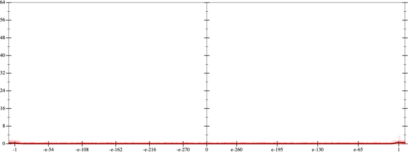
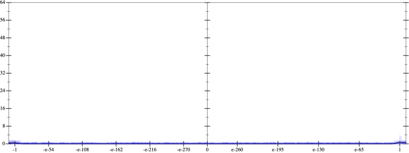
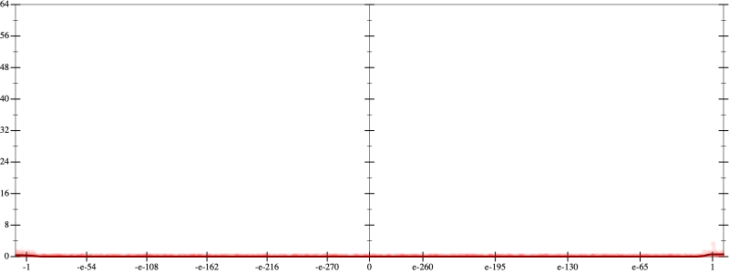
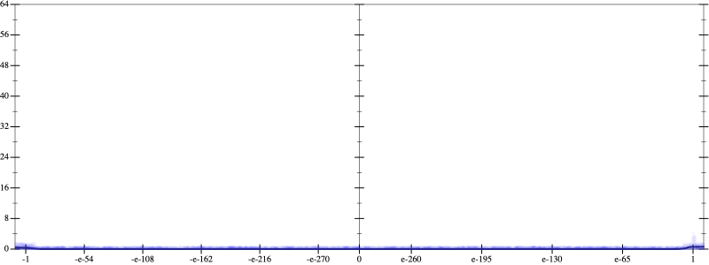
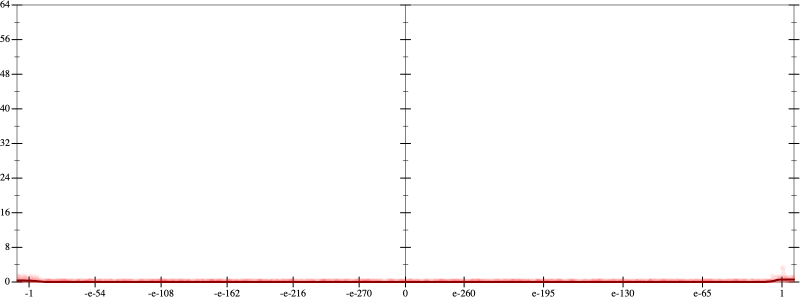
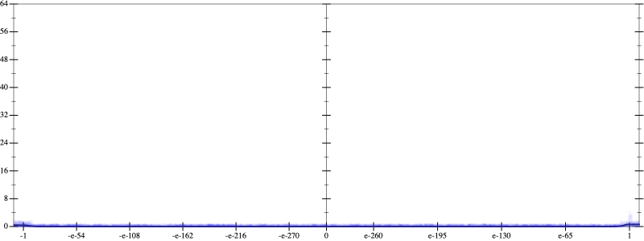

Error
 
Bits error versus x
Bits error versus x
Results
Initial program 0.0
rmApplied add-sqr-sqrt0.0
Time bar (total: 25.8s)Debug log
herbie shell --seed 329334287
(FPCore (x)
:name "3"
:pre (and (>= x -10000000000.0) (<= x 10000000000.0))
(+ (+ (+ 1.0 (* -3.0 x)) (* 1.5 (* x x))) (* -0.166667 (* (* x x) x))))